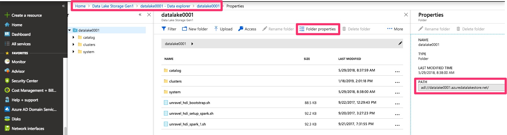
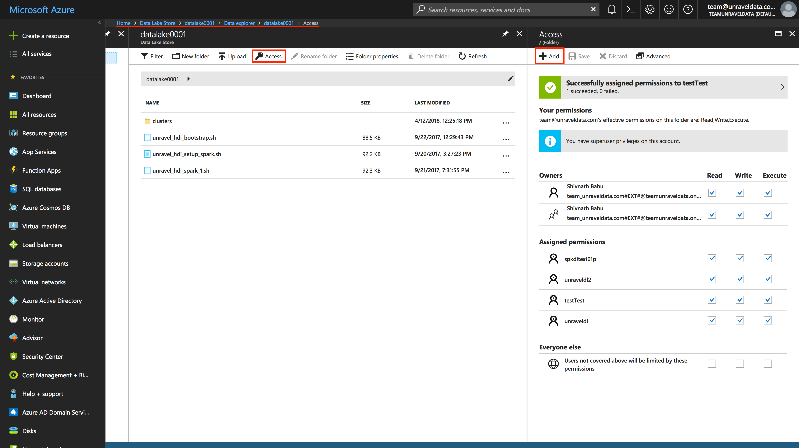

Microsoft Azure HDInsight
This topic explains how to deploy Unravel on Microsoft Azure HDInsight.
Installing Unravel as a separate Azure VM allows you to connect to ephemeral Hadoop clusters on the same virtual network.
Installing Unravel on a Separate Azure VM
This option involves the following steps:
Create Azure Storage
This topic explains how to create Azure storage appropriate for your Hadoop cluster, which could be Kafka or Spark.
First, you need to determine which storage type is appropriate for your cluster and supported by Unravel. You have the following options:
Windows Azure Storage Blob ("Azure Storage")
By default HDInsight 3.6 uses Blob storage, which is a general-purpose storage type for Big Data. Blob storage is a key-value store with a flat namespace. It has full support for:
Analytics workloads; batch, interactive, streaming analytics
Machine learning data such as log files, IoT data, click streams, large datasets
Low-cost, tiered storage
High availability/disaster recovery
Note
Unravel doesn't support encryption (SSL) with Blob storage (WASB).
Azure Data Lake Storage generation 1 (ADLS v1)
The other major option for Hadoop clusters is ADLS v1. ADLS is a hierarchical file system. It has full support for
Analytics workloads; batch, interactive, streaming analytics
Machine learning data such as log files, IoT data, click streams, large datasets
File system semantics
File-level security
Scalability
Azure Data Lake Storage generation 2 (ADLS v2) (Preview mode)
ADLS generation 2 combines the features of Blob storage andADLS generation 1.
Note
Unravel has not been tested with ADLS v2 since it is still in preview mode.
For an in-depth comparison, see https://docs.microsoft.com/en-us/azure/data-lake-store/data-lake-store-comparison-with-blob-storage
Note
The rest of this document refers to these storage types as Blob and ADLS.
Prerequisites
You must already have an Azure account and able to log into https://portal.azure.com
You must already have a resource group assigned to a region in order to group your policies, VMs, and storage blobs/lakes/drives.
A resource group is a container that holds related resources for an Azure solution. In Azure, you logically group related resources such as storage accounts, virtual networks, and virtual machines (VMs) to deploy, manage, and maintain them as a single entity.
You must already have a virtual network for your resource group. This virtual network will be shared by your Hadoop cluster and the Unravel VM.
Steps
Log into https://portal.azure.com.
Click Storage accounts | + Add.
On the Basics tab, enter values for the following fields:
Subscription: Select the subscription type.
Resource Group: Select the resource group to associate with this storage instance.
Storage Account Name: Enter a name, using lowercase letters and numbers.
Location: Select a data center region.
Performance: Select Standard or Premium:
Standard storage uses magnetic disks and is cheaper. Premium storage uses SSDs, so it has higher performance and is recommended for Spark and Kafka clusters.
Account kind: Select your storage type: Blob or Storage (ADLS v1)
OR StorageV2 (ADLS v2)
Note
StorageV2 (ADLS v2) is still in preview mode and is not currently supported by Unravel.
Replication: Select your desired replication to either be local, or always available in the same zone, region, or replicated geographically. See more choices in the Advanced section.
Locally redundant storage (LRS): Only handles failures within the data-center. Durability guarantee is 11 9's.
Zone-redundant storage (ZRS): Handles failures in the data-center and zone, but not region. Durability guarantee is 12 9's. Only supported on ADLS v2.
Geo-redundant storage (GRS): Handles failures in the data-center, zone, and region, but does not allow read-access in another region in a failure scenario. Durability guarantee is 16 9's.
Read-access geo-redundant storage (RA-GRS) FIXLINK: Handles failures in the data-center, zone, region, and allows read-access in another region. Durability guarantee is 16 9's.
Access Tier: Only available for Blob storage & ADLS v2 (which is not currently supported by Unravel). If you pick this option, select hot storage.

Click the Advanced tab.
Set Secure transfer required to Disabled or Enabled.
Note
Unravel doesn't support encryption (SSL) with Blob storage (WASB).
For Virtual Networks,select whether to allow traffic from all networks or only from within the virtual network and subnet(s) you specify.

Click Review + create.
If your settings are correct, click Create. To edit your settings, click Previous.
Related Resources
| Finding Unravel Properties' Values in Microsoft Azure |
| Azure - creating a storage account |
| Difference between Replication types |
Creating and Configuring the Azure VM
This topic explains how to create a separate Azure VM, install the Unravel RPM, and configure it.
Prerequisites
You must already have an Azure account and able to log into https://portal.azure.com
You must already have a resource group assigned to a region in order to group your policies, VMs, and storage blobs/lakes/drives.
A resource group is a container that holds related resources for an Azure solution. In Azure, you logically group related resources such as storage accounts, virtual networks, and virtual machines (VMs) to deploy, manage, and maintain them as a single entity.
You must already have a virtual network and network security group set up for your resource group. Your virtual network and subnet(s) must be big enough to be shared by the Unravel VM and the target HDInsight cluster(s).
You must have root privilege in order to perform some commands on the VM.
You must already have created a storage system. For instructions, see Create Azure Storage.
You must have an SSH key pair.
Your VM host must meet the requirements below.
Support Chart and VM Requirements
Azure HDI cluster compatibility | HDInsight 3.6 Storage type: Blob (WASB) or ADLS v1 Limitations: Unravel currently only works with Blob (WASB) or ADLS v1. It does not support multiple Azure Data Lake Storage accounts or ADLS v2 (preview). HDP 2.6.5 Spark 1.6.3, 2.1.0, 2.2.0, 2.3.0 Limitations: Spark relies on the yarn-site configuration property <property> <name>yarn.log-aggregation.file-formats</name> <value>TFile</value> </property> Hive 2.1 Kafka 0.10.0, Kafka 1.0, Kafka 1.1 (preview) | |||||||
Image (underlying operating system for the VM) | RHEL 7 or CentOS 7.2 - 7.6 Note that the actual HDInsight Kafka/Spark cluster can run another OS. | |||||||
CPU and RAM minimum requirements | Minimum VM type suggested: Medium memory optimized such as Standard_E8s_v3 Cores: 8 min RAM: 64 GB min | |||||||
Disk requirement | min 100GB for | |||||||
Network requirement |
| |||||||
Security requirement | Allows inbound ssh to the unravel VM Allows outbound Internet access and all traffic within the subnet (VSNET). Allows TCP port 3000 and 4043 to Unravel VM from HDInsight cluster | |||||||
Note
unravel-host must be a fully qualified domain name or IP address.
Provision an Azure VM for Unravel Server
Log into https://portal.azure.com.
Select Virtual machines, and click + Add.

On the Basics tab, enter values for the following fields:
Subscription: Select the subscription type.
Resource Group: Select the resource group to associate with this VM. The VM inherits configurations for lifecycle, permissions, and policies from this group.
Virtual machine name: Enter a name, using only alphanumeric characters, "-", and "_". This value becomes the VM's hostname.
Region: Select a data center region for this VM. Note that not all VM types are available in all regions.
Availability options: Select your redundancy (durability) settings.

Image: Select the underlying operating system for the VM. As noted above, Unravel supports RHEL 7 or CentOS 7.2 - 7.6 only.
Size (required): Select a standard, memory optimized VM with at least 8 vCores and 64 GB RAM, such as E8s_v3.

Select your VM's Authentication type.
Tip
Best practice is to authenticate using an SSH public key, which you can generate using ssh-keygen. Avoid any reserved names like "admin" for the username.
Set Inbound Port Rules:
If you plan on allowing external access to Unravel UI, then
select Allow selected ports and then select HTTPS and SSH. EDITORNOTE: Please confirm this deletion.
Click Next: Disks.
On the Disks tab, enter values for the following fields:
OS disk type: For better performance in production, we recommend a Premium SSD because it tolerates higher IOPS. For a dev/test cluster, we suggest a Standard SSD.

Advanced: We recommend using managed disks that have better performance and reliability. (? EDITORNOTE: When I expand the "Advanced" section I see nothing)
Data disks:
If you don't have a disk ready, click Create and attach new disk. In the dialog box, provide the desired Disk Name, Size (GiB), and Source Type of "empty disk". We recommend at least 500 GB of space, and ideally 1024 GB for production clusters.
Otherwise, click Attach an existing disk.
Click Next: Networking.
On the Networking tab, enter values for the following fields:
Warning
It is imperative that the VM, the Azure storage, and the cluster(s) you plan to monitor are all on the same virtual network and subnet(s).
Virtual network (required): Select the appropriate virtual network for your cluster(s).
Subnet (required): Select a subnet with the appropriate address range based on the number of IPs you plan to have in your network. For more information, see https://www.aelius.com/njh/subnet_sheet.html.

NIC network security group: Set this to Basic.
Unravel Server works with multiple HDInsight clusters, including existing clusters and new clusters.
A TCP and UDP connection is needed from the "head node" of each HDInsight cluster to Unravel Server.
Add an inbound security policy to allow SSH access and 443 access to the Unravel node.
The default security policy should allow all access within the VNET. Default rules start with a priority of 65000.

Click Review + create.
Click Create.
It takes about 2 minutes to create your VM.

When Azure completes the creation of your VM,click Go to resource.
Copy the VM's public IP address.
Open an SSH session to your VM's public IP address and verify that your IP address is as expected:
ssh -i
ssh-keyuser@ip-addressVerify that eth0 on the new VM is bound to the private IP address shown in the Azure portal.
ifconfig eth0 Link encap:Ethernet HWaddr 00:0d:3a:1b:c2:48 inet addr:10.10.1.96
Configure the VM at First Login
Install ntpd, start it at boot time, and check whether time is accurate. This is necessary in order to synchronize your VM's clock. For more information about ntpd, see https://wiki.archlinux.org/index.php/Network_Time_Protocol_daemon.
sudo su - yum install ntp ntpd -u ntp:ntp
Disable Security Enhanced Linux (SELinux) permanently. This is important because HDFS maintains replication in different nodes/racks, so setting firewall rules in SELinux will lead to performance degradation.
sudo setenforce Permissive
In
/etc/selinux/config, setSELINUX=permissiveto make sure the settings persist after reboot:SELINUX=permissive
Install
libaio.x86_64.Libaio has a huge performance benefit over the standard POSIX asynchronous I/O facility because the operations are performed in the Linux kernel instead of as a separate user process.
sudo yum -y install libaio.x86_64
Install
lzop.x86_64.Hadoop requires LZO compression libraries.
sudo yum install lzop.x86_64
Disable the firewall and check your iptable rules.
sudo systemctl disable firewalld sudo systemctl stop firewalld sudo iptables -F sudo iptables -L
Prepare the second disk (for example,
/dev/sdc) with at least 500 GB that was configured previously on Azure portal. Use fdisk -l to check any 500GB disk without partition. This step requires root privilege.sudo su - # List all disks and partitions # You should see one called "sdc" if you attached a 500-1000 GB disk. fdisk -l fdisk /dev/sdc # p (list current partitions) # n (new partition) # p (primary) # Keep accepting rest of default configs. # w (save) # Format the disk /usr/sbin/mkfs -t ext4 /dev/sdc mkdir -p /srv DISKUUID=`/usr/sbin/blkid |grep ext4 |grep sdc | awk '{ print $2}' |sed -e 's/"//g'` echo $DISKUUID # Mount the disk on /srv echo "${DISKUUID} /srv ext4 defaults 0 0" >> /etc/fstab mount /dev/sdc1 /srv # Verify the disk space df -hT /srv Filesystem Type Size Used Avail Use% Mounted on /dev/sdc1 ext4 197G 61M 187G 1% /srv # Set permissions for Unravel and symlink Unravel's directories to the /srv mount mkdir -p /srv/local/unravel chmod -R 755 /srv/local ln -s /srv/local/unravel /usr/local/unravel chmod 755 /usr/local/unravelCreate the
hdfsuser and thehadoopgroup.sudo useradd hdfs sudo groupadd hadoop sudo usermod -a -G hadoop hdfs
(Optional) Install MySQL
Complete the [Before Installing Unravel RPM] steps in Install and Configure MySQL for Unravel.
Install the Unravel Server RPM on the VM
Get the Unravel Server RPM.
Download the RPM from the Unravel distribution server to the Unravel VM. For instructions, see Download Unravel Software.
cd /tmp # Note that the same RPM is used for both EMR and HDInsight. curl -u
username:password-v https://preview.unraveldata.com/unravel/RPM/version/unravel-version-EMR-latest.rpm -o unravel-version-EMR-latest.rpmInstall the Unravel Server RPM.
Tip
The precise filename can vary, depending on how it was fetched or copied. The rpm command does not require a
.rpmsuffix. The flag-Uworks for both initial installations and upgrades.sudo rpm -U unravel-4.4.3.0-EMR-latest.rpm
Run the
await_fixups.shscript to make sure background processing is finished before you proceed to other steps.Note
If you're doing a routine upgrade, you can start all Unravel daemons, but don't stop or restart them until
await_fixups.shprintsDONE(it takes a few minutes)./usr/local/unravel/install_bin/await_fixups.sh DONE
This installation creates the following directories, databases, and users:
Directories: The installation creates
/usr/local/unravel/which contains the executables, scripts, and settings (/usr/local/unravel/etc/unravel.properties)./etc/init.d/unravel_*contains scripts for controlling the Unravel services/etc/init.d/unravel_all.shcan be used to manually stop, start, restart, and get the status of all daemons in the proper order.Subsequent RPM upgrades don't change
/usr/local/unravel/etc/unravel.propertiesbecause your site-specific properties are put into this file.Users: User
unravelis created if it does not already exist.DB: The initial bundled Postgres database and other durable state are put in
/srv/unravel/This can later be switched to an external RDS. We recommend an externally managed MySQL DB for production, such as Azure SQL DB.Config: The master configuration file is in
/usr/local/unravel/etc/unravel.propertiesLogs: All logs are in
/usr/local/unravel/logs/Grant access to Unravel Server
Security Reminder
Do not make Unravel Server UI TCP port 3000 accessible on the public Internet because doing so would violate your licensing terms.
By default, a Public IP should be assigned to the Unravel VM .
Create a security policy that allows SSH access to Unravel VM from your trusted network. For the Azure HDInsight cluster(s), it is required to allow port 443 (HTTPS) from Azure networks (or simply allow TCP port 443 from the outside).
It is recommended that you use an SSH key to access the Unravel node.
If You Installed MySQL, Configure It
Complete the [After Installing Unravel RPM] steps in Install and Configure MySQL for Unravel.
Modify Properties and Start Unravel Daemons
Open an SSH session to the Unravel VM.
ssh -i
ssh-private-keyssh-user@unravel-hostSet correct permissions on the Unravel configuration directory.
cd /usr/local/unravel/etc sudo chown unravel:unravel *.properties sudo chmod 644 *.properties
Update
unravel.ext.shbased on how you plan to configure your cluster.Tip
To find your cluster's HDInsight version, see https://docs.microsoft.com/en-us/azure/hdinsight/hdinsight-component-versioning#supported-hdinsight-versions. You need this information for the commands below.
# Find the version of HDP that is installed by checking the HDP symlink. Take the first 2 digits, such as 2.6 # You can also check https://docs.microsoft.com/en-us/azure/hdinsight/hdinsight-component-versioning#supported-hdinsight-versions hdp-select status | grep hadoop hadoop-client - 2.6.5.3005-27 # Append this classpath based on the version you found echo "export CDH_CPATH=/usr/local/unravel/dlib/hdp2.6.x/*" >> /usr/local/unravel/etc/unravel.ext.sh
Run the "switch user" script.
/usr/local/unravel/install_bin/switch_to_user.sh hdfs hadoop
In
/usr/local/unravel/etc/unravel.properties, add/modify the following properties:com.unraveldata.onpremThis is optional at this time but is required later.
echo "com.unraveldata.onprem=false" >> /usr/local/unravel/etc/unravel.properties
Modify other properties using the guidelines in the table below:
Update the following properties for an HDInsight cluster, depending on whether you're using Blob storage or ADLS.
Set these properties with values you obtain from Azure. For help in locating the right values, see Finding Unravel Properties' Values in Microsoft Azure.
For Blob (WASB) storage, update:
For ADLS, update:
Restart Unravel Server
Whenever you modify com.unraveldata.login.admins in /usr/local/unravel/etc/unravel.properties, you must restart Unravel Server for the changes to take effect.
The echo command shows the page to visit from your web browser.
If you are using an SSH tunnel or HTTP proxy, you might need to make adjustments to the host/IP of the URL:
sudo /etc/init.d/unravel_all.sh restart sleep 60
Log into Unravel UI
Run the echo command to find the URL for Unravel UI.
If you are using an SSH tunnel or HTTP proxy, you might need to make adjustments to the host/IP of the URL:
echo "http://(hostname -f):3000/"
Create an SSH tunnel to access the Azure VM for Unravel's TCP port 3000.
ssh -i
ssh-private-keyssh-user@unravel-host-L 3000:127.0.0.1:3000Using a supported web browser, navigate to
http://127.0.0.1:3000and log in as useradminwith passwordunraveldata.
Congratulations! Unravel Server is up and running. Proceed to Connecting Unravel to the HDInsight Cluster.
Connecting Unravel to the HDInsight Cluster
This topic explains how to spin up a Hadoop, HBase, Spark, or Kafka cluster, configure the cluster with a script action, and connect it to Unravel Server.
Before Unravel can analyze any job running on your HDInsight cluster, the Unravel server and sensors must be deployed on the cluster nodes through an Azure "script action".
Note
For HDInsight clusters without Internet access, you can download these scripts and store them in your Azure blob storage and use the blob storage URI on the script action's Bash script URI field.
Unravel provides two types of "script actions" depending on the type of cluster.
Cluster Type | Download path | Supported HDI cluster(s) | Apply to cluster node type(s) |
|---|---|---|---|
Hadoop, HBase, or Spark | Hadoop 2.7.3 HBase 1.1.2 Spark 2.1.0, 2.2.0, 2.3.0 | Head node, Worker node, Edge node | |
Kafka | Kafka 0.10.0, Kafka 1.0.0, Kafka 1.1.0 | Head node |
Checks before running script action
Read the latest documentation on the ports required by HDInsight: https://docs.microsoft.com/en-us/azure/hdinsight/hdinsight-hadoop-port-settings-for-services
Ensure Unravel service is running on Unravel VM and ports 3000 and 4043 are reachable from the Azure HDInsight cluster master node before running the the Unravel "script action" script.
For example,
ssh -issh_keyssh_user@UNRAVEL_HOST_IPsudo su - netstat -anp | grep 3000 tcp 0 0 0.0.0.0:3000 0.0.0.0:* LISTEN 65072/node hostname # On one of the cluster's head nodes: pingUNRAVEL_HOST_IP
Depending on your cluster type, choose one of these options:
Prerequisites
You must already have an Unravel VM on Azure HDInsight running and the Unravel UI available on port 3000. For instructions, see Creating and Configuring the Azure VM.
If you plan to create a cluster, you must have the following information ready:
Virtual Network and subnet of the Unravel VM
Your Azure Storage details. For storage setup, see Create Azure Storage.
Option A: Connecting to a New Cluster
Log into the Azure portal (https://portal.azure.com).
Select HDInsight cluster.
In the dialog box, enter the details for your desired cluster type, topology, OS, and so on.

In the Security + networking tab, make sure to select the same virtual network and subnet that is used by the Unravel VM.

In the Storage tab, select whether to use Azure Blob Storage or Azure Data Lake Storage, plus any secondary accounts.
In the Cluster size tab, select your desired topology for number of workers and VM types.

Optional: In the Script action tab, refer to option B and option C if you wish to set up a "script action" script for your desired cluster type at this time. You can always do this step after the cluster has been deployed.
In the Summary - Confirm configurations tab, review your cluster and click on Create. It should take anywhere from 5-15 minutes to create your cluster dependency on the size and parameters.
Option B: Connecting to an Existing Hadoop, HBase, or Spark Cluster
Log into the Azure portal (https://portal.azure.com).
Select HDInsight cluster.
Select the Hadoop, HBase, or Spark cluster that you want to apply the Unravel "script action" script to.
Click Script actions on the vertical menu, and click Submit new.
Specify the information on the right column for the fields on the left.
Script type
Custom
Name
unravel-script-01(or any name to identify this script action run)Bash script URI
Node type(s)
Select options Head, Worker, and Edge. Note: The Edge option is only available for an existing cluster.
Parameters
--unravel-server
unravel-server-private-ip:3000 --spark-versionspark-version[--metrics-factor N]The optional flag
--metrics-factorspecifies how often, in multiples of 5 second JVM metrics are obtained. Default value is 1, which means 5 seconds. For workloads dominated by long-running jobs, use a larger factor. For example, if a cluster only has one Spark job that takes hours, use a factor of 12, or 60 seconds.For example,
--unravel-server 10.10.1.10:3000 --spark-version 2.3.0
To undo the changes use the
--uninstallparameter.For example,
--unravel-server 10.10.1.10:3000 --spark-version 2.3.0 --uninstall
Persist this script action to rerun when new nodes are added to the cluster.
Select this check box. Note that persistence only applies on new Head and Worker nodes

Click Create.
Option C: Connecting to Existing Kafka Cluster(s)
Log into the Azure portal (https://portal.azure.com).
Select HDInsight cluster.
Select the Kafka cluster that you want to apply the Unravel "script action" script to.
If the Kafka cluster has no Internet access, download the
HDInsightUtilities-v01.shscript and copy it to the Kafka head node's/tmpfolder.For example,
wget -O /tmp/HDInsightUtilities-v01.sh -q https://hdiconfigactions.blob.core.windows.net/linuxconfigactionmodulev01/HDInsightUtilities-v01.sh
Click Script actions | Submit new and enter the following information:
Script type
Custom
Name
unravel-script-01(or any name to identify this script action run)Bash script URI
Node type(s)
Head
Parameters
--unravel-serverunravel-server-private-ip:3000For example,
--unravel-server 10.10.1.10:3000
Persist this script action
Checked. Note that persistence only applies on new Head nodes
Click Create.
After the Kafka script action script completed successfully, open an SSH session to the Kafka cluster's "head node" and append the contents of
/tmp/unravel/unravel.ext.propertiesto/usr/local/unravel/etc/unravel.propertieson your Unravel VM.In a multi-cluster deployment, com.unraveldata.ext.kafka.clusters is a comma-separated list of clusters and the set of properties prefixed with com.unraveldata.ext.kafka.
cluster_nameare repeated for each cluster.For example, for two Kafka clusters,
/tmp/unravel/unravel.ext.propertieslooks like this:# Adding Kafka properties Adding Kafka properties com.unraveldata.ext.kafka.clusters=
cluster_name1,cluster_name2com.unraveldata.ext.kafka.cluster_name1.bootstrap_servers=wn0-cluster_name1:9092,wn1-cluster_name1:9092 com.unraveldata.ext.kafka.cluster_name1.jmx_servers=broker1,broker2 com.unraveldata.ext.kafka.cluster_name1.jmx.broker1.host=wn0-cluster_name1com.unraveldata.ext.kafka.cluster_name1.jmx.broker1.port=9999 com.unraveldata.ext.kafka.cluster_name1.jmx.broker2.host=wn1-cluster_name1com.unraveldata.ext.kafka.cluster_name1.jmx.broker2.port=9999 com.unraveldata.ext.kafka.cluster_name2.bootstrap_servers=wn0-cluster_name2:9092,wn1-cluster_name2:9092 com.unraveldata.ext.kafka.cluster_name2.jmx_servers=broker1,broker2 com.unraveldata.ext.kafka.cluster_name2.jmx.broker1.host=wn0-cluster_name2com.unraveldata.ext.kafka.cluster_name2.jmx.broker1.port=9999 com.unraveldata.ext.kafka.cluster_name2.jmx.broker2.host=wn1-cluster_name2com.unraveldata.ext.kafka.cluster_name2.jmx.broker2.port=9999Note
Unravel VM must have access to the Kafka worker nodes' broker port 9092 and Kafka JMX port 9999
After updating the Kafka properties, restart Unravel Server.
sudo /etc/init.d/unravel_all.sh restart
Next Steps
For additional configuration and instrumentation options, see Next Steps.
Troubleshooting Tips
From the Azure portal, you can check if a script action finished successfully by checking the SCRIPT ACTION HISTORY:

If script action process fails, you can check the error messages from the HDInsight cluster's Ambari dashboard, which has a balloon next to the cluster name on the top menu bar with the recent operations.

Click Ops and search for the most recent run_customscriptaction command and inspect the log messages. You may see multiple entries of run_customscriptaction which were created by previous runs.

The Unravel script action cannot be rerun. If you need to redeploy the Unravel script action, you must submit a new "script action" script with a different name.
Upgrading the Unravel VM
To check for new releases of Unravel's VM, see Download Unravel Software Versions. To upgrade your existing Unravel Azure VM, download the new unravel VM package and install it.
Note
Upgrading the Unravel VM or app should not affect operations on the connected HDInsight cluster and can be done at any time. However, in some cases you'll also need to upgrade your Unravel Sensor(s) as well, and this requires you to re-submit the Unravel action scripts to head, worker, and edge nodes.
Finding Unravel Properties in Azure
HDInsight Block Storage Properties
For a storage account named storage-name the corresponding storage account name is fs.azure.account.key.. A storage account name has two access keys. Both access keys are required.storage-name.blob.core.windows.net
Property | Definition | Default |
|---|---|---|
com.unraveldata.hdinsight.storage-account-name-1 | Storage account name | Retrieve from Microsoft Azure |
com.unraveldata.hdinsight.primary-access-key | Storage account key1 | Retrieve from Microsoft Azure |
com.unraveldata.hdinsight.storage-account-name-2 | Storage account name | Set to same value as com.unraveldata.hdinsight.storage-account-name-1 |
com.unraveldata.hdinsight.secondary-access-key | Storage account key2 | Retrieve from Microsoft Azure |
Navigate to https://portal.azure.com
Find the name of the storage account.
In the Azure dashboard, click HDInsight clusters, select the cluster you want, and click Storage accounts.

Copy the storage name (
storage-name).Tip
The complete name of your storage is
fs.azure.accountkey..storage-name.blob.core.windows.net
Set both com.unraveldata.hdinsight.storage-account-name-1 and com.unraveldata.hdinsight.storage-account-name-2 to this name.
Find the storage account's access keys.
From the Azure portal, select Storage Accounts |
storage-name| Access Keys.
Set com.unraveldata.hdinsight.primary-access-key to key1.
Set com.unraveldata.hdinsight.secondary-access-key to key2.
Azure Data Lake Storage (ADLS) Properties
The following properties are set with information obtained from the ADL properties in Microsoft Azure. If you are using Azure Blob storage (WASB), you can skip these properties.
Property | Definition | Default |
|---|---|---|
com.unraveldata.adl.accountFQDN | The data lake fully qualified domain name. For example, | Retrieve from Microsoft Azure |
com.unraveldata.adl.clientId | Also known as the application ID. This is the application registration you created in the Azure Active Directory. | Retrieve from Microsoft Azure |
com.unraveldata.adl.clientKey | Also known as the application access key. You can create this key after registering the application. | Retrieve from Microsoft Azure |
com.unraveldata.adl.accessTokenEndpoint | The OAUTH 2.0 token endpoint as shown in the application registration tab. | Retrieve from Microsoft Azure |
com.unraveldata.adl.clientRootPath | The path in the data lake store where the target cluster has been given access. For example, on your deployment cluster | Retrieve from Microsoft Azure |
Locate your account's fully qualified domain name (FQDN).
Select Data Lake Storage | Data Explorer, and select the folder in the Data Explorer panel.
In the screenshot below, the folder name is datalake0001.

Click Folder properties.
Copy your account's FQDN in the Properties panel under PATH, and set com.unraveldata.adl.accountFQDN to this value.
For example,
com.unraveldata.adl.accountFQDN=datalake0001.azuredatalakestore.net
Note
Don't include the leading
adl://in com.unraveldata.adl.accountFQDN.
Locate the OAUTH 2.0 token endpoint, application ID, and application key.
From the Azure portal, select Azure Active Directory | App Registrations | Endpoints.

Set com.unraveldata.adl.accessTokenEndpoint to the value of OAUTH 2.0 TOKEN ENDPOINT.

Click View all applications.

If your application is listed, select it.
If your application isn't listed, you need to create a new application:
select + New application registration, fill in the application information, and select Create.
Note
You need to grant access to the new application. For steps, see Grant Access to a Newly Created App.


Set com.unraveldata.adl.clientID to your application ID.
Whether you selected an existing application or created a new one, find the the app in the registered app panel. This panel contains your application ID.

Select Settings | Keys.
Create a new key.
Fill in the Description and select Duration.
To generate the key, click Save.

Warning
Copy and save the key value immediately. If you don't save it, when you leave this page you can't retrieve the key and must create a new one.

Set com.unraveldata.adl.clientKey to the key value.
Grant Access to a Newly Created Application
Select Data Lake Store | Data Explorer.
Select Access | +Add.
Click OK, select your app (in the screenshot, it's testTest) and click Select.

Grant the permissions to your app and click OK.

Your app is now listed under Assigned Permissions with the permissions noted.

Using Azure HDInsight APIs
This section explains how to use the Azure CLI for common actions.
Tip
Best practice is to install the Azure CLI on a docker container.
Submit a Script Action
Log into the Azure CLI.
az login
To sign in, use a web browser to open the page https://microsoft.com/devicelogin and enter the code ######### to authenticate.
Run the script action.
Warning
First, refer to the script you want to run and ensure you have its proper parameters. You might need to remove any "
--" from the parameters.azure hdinsight script-action create $CLUSTER -g $RESOURCEGROUP -n $SCRIPTNAME -u $SHELLSCRIPT -p 'unravel-server $PRIVATEIP:3000 spark-version $MAJOR.$MINOR.$PATCH' -t "headnode;workernode;edgenode"
Where:
-gis the Resource Group name-nis the name of this script action task-uis the script path-pis a list of input paramaters for the script-tis a semicolon-separated list of node types
For example,
azure hdinsight script-action create DEVCLUSTER -g UNRAVEL01 -n unravel-script-action -u https://raw.githubusercontent.com/unravel-data/public/master/hdi/hdinsight-unravel-spark-script-action/unravel_hdi_spark_bootstrap_3.0.sh -p 'unravel-server 128.164.0.1:3000 --spark-version 2.3.0' -t "headnode;workernode;edgenode"
Create an Edge Node
An Edge Node is a VM on an HDInsight cluster that only has the Hadoop client installed instead of any servers or daemons.
Determine which ARM template and parameter file to download to the workstation that contains Azure CLI:
Option A: An edge node that also runs the Unravel script (recommended)
Option B: An edge node that only runs a simple script,
emptynode-setup.sh
Download the ARM template and JSON parameter files into your configured Azure CLI workstation.
curl
filename-oname.jsonModify the VM type, parameters, Kafka/Spark version, and so on.
For example,
In the ARM template, edit these fields as appropriate.
"vmSize": "Standard_D3_v2" "parameters": "unravel-server $PRIVATEIP:3000 spark-version $MAJOR.$MINOR.$PATCH" "applicationName1": "$NEW_EDGE_NODE_HOSTNAME"
In the parameter file, modify the cluster name.
"clusterName": { "value": "$MY_CLUSTER_NAME" }
Validate template before deployment.
az group deployment validate --resource-group "$RESOURCEGROUP" --template- file azuredeploy.json --parameters azuredeploy.parameters.json { "error": null, ... "provisioningState": "Succeeded", ... }Create the edge node.
This should take 10-15 minutes to run since it has to provision a VM and install the Hadoop binaries.
az group deployment create --name deploymentname --resource-group "$RESOURCEGROUP" --template- file azuredeploy.json --parameters azuredeploy.parameters.json
Verify that the changes have been added to Ambari.

Auto-Scale the Cluster
HDInsight allows you to resize your cluster up/down to meet your current demands.
From the Azure portal, navigate to HDInsight Clusters |
your-cluster| Cluster Size.
Enter your desired number of workers and validate that you have enough resources for your resource group and region (based on any quotas).
Click Save.
HDInsight takes the appropriate action:
For downsizing, HDInsight runs the Decommission command some number of workers on the DataNode, NodeManager, and HBase RegionServer processes (if it exists). Once drained, it removes the VM from Ambari and then from the cluster.
For upsizing, HDInsight provisions new VM, installs the Hadoop bits, and adds the worker components (DataNode, NodeManager, and potentially HBase RegionServer).

Note
If the Unravel script action was also "persisted" to run on "worker nodes", then new VMs will automatically run a custom command for the Unravel bootstrap script.